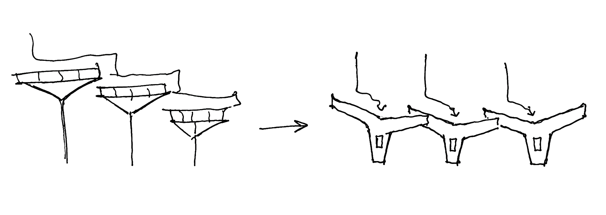
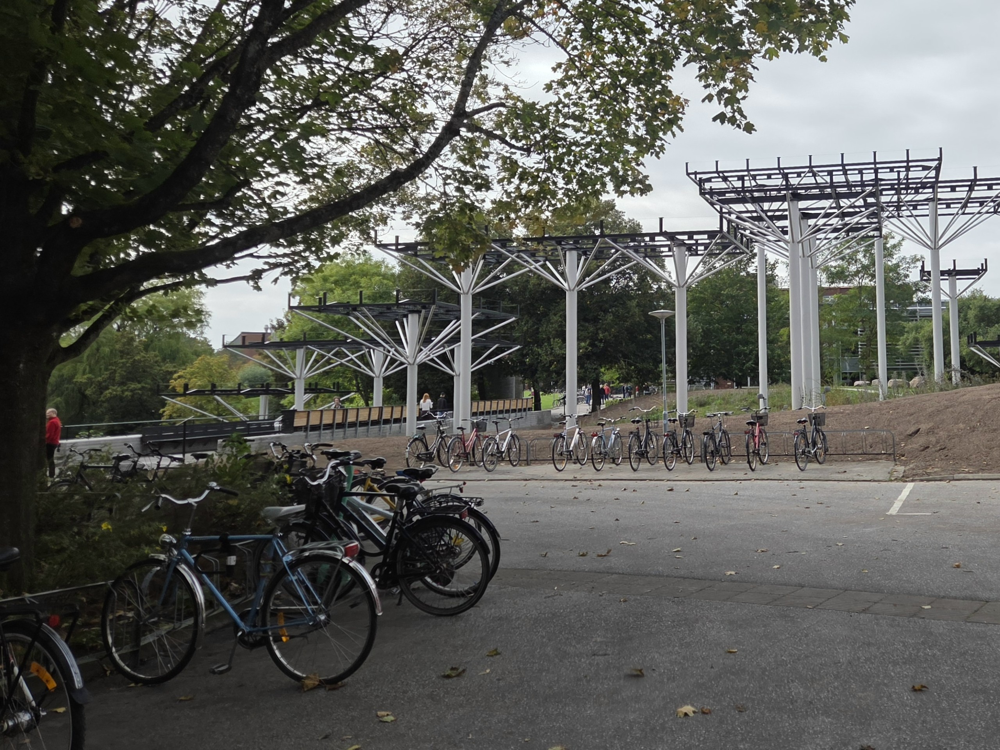
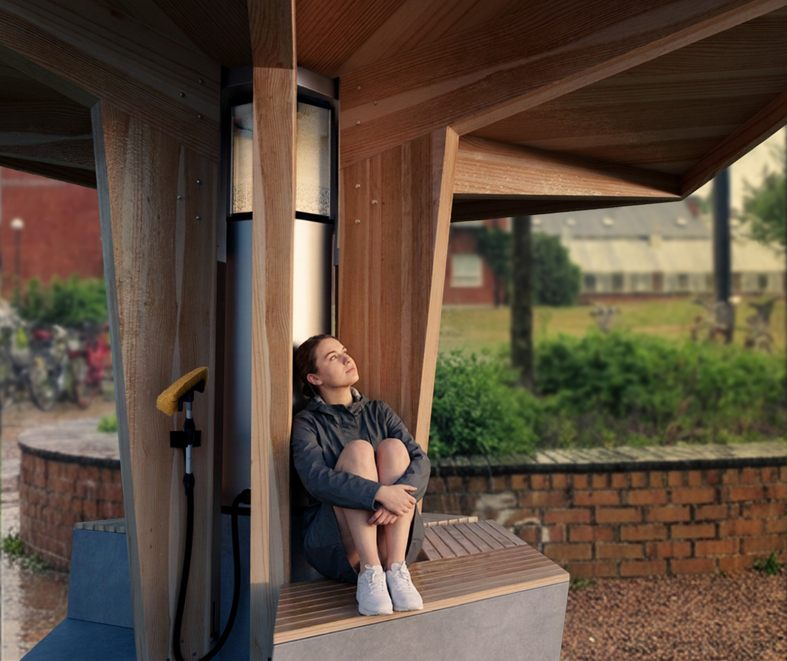

Campustratten collects and filters rainwater through its green roof, using substrates selected based on current research to clean runoff. Its angled roofs create an approachable, meeting point that is inspired by the existing LTH-fountain. Strategically placed on campus, it offers a natural spot to gather in a circle and converse. On a rainy day, watch the water filtering or on a sunny day, use the water to clean your bike.
The existing campus fountain used to display water flowing like a waterfall. While it still remains on campus, it no longer serves its original function. Campustratten resembles the original structure and brings back the notion of a sculpture moving water, but with a sustainable and educational purpose.


